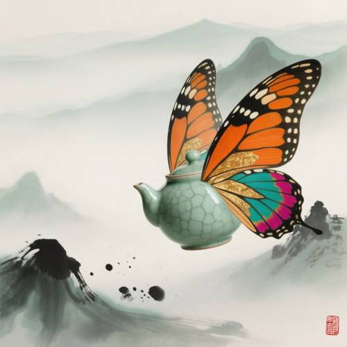
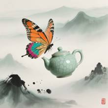
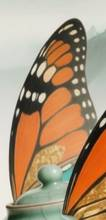

Style — A celadon teapot grows colorful butterfly wings and flies among the ha
A celadon teapot grows colorful butterfly wings and flies among the hazy distant mountains. It has a strong national style and ink painting style.


Judge — Direct
- PASSStyle — The image exhibits a strong national and ink painting style. The background features hazy, distant mountains rendered with black ink-like brushstrokes, characteristic of traditional Chinese ink wash painting. The foreground also includes elements like rocks and trees created with similar bold, black strokes. The central object is a celadon teapot, a classic element of Chinese culture, which reinforces the 'national style'.
- FAILCompound - Imagination — The image depicts a celadon teapot floating in the air. A separate, complete butterfly with colorful wings is perched on the handle of the teapot. The image does not show butterfly wings growing directly from the teapot itself as the prompt specifies. Instead, it shows a combination of a flying teapot and a butterfly resting on it.
Judge — Continuum
- PASSStyle — The image incorporates a strong national and ink painting style. The background features hazy, layered mountains rendered in a monochromatic palette with soft washes, characteristic of traditional Chinese landscape painting (shanshui). There are also bold black ink brushstrokes and splatters in the foreground and a red seal stamp in the lower-right corner, both of which are hallmarks of this artistic tradition.
- PASSCompound - Imagination — The image depicts an impossible, imaginative subject. A celadon-colored teapot with a crackle glaze has two large, colorful butterfly wings attached to its sides. The wings are primarily orange and black, with sections of gold, teal, and magenta. The composite object is shown airborne against a backdrop of mountains, clearly illustrating the concept of a flying teapot with butterfly wings.
What the agent did
Thinking
The user wants an image of a celadon (celadon/longquan ware) teapot with colorful butterfly wings, flying between misty distant mountains, in a strong national style (Chinese guofeng style) and ink painting style (shuimo style). Let's generate this with qwen-image. The prompt should be rich in visual detail: a celadon teapot with colorful butterfly wings, flying/soaring between misty, distant mountains, Chinese national style (guofeng), ink wash painting (shuimo) aesthetics. Let's carefully craft the prompt: "A celadon teapot with delicate crackle glaze, grown with large colorful butterfly wings (vivid iridescent monarch and peacock butterfly wing patterns), gently soaring/floating in mid-air among layers of hazy distant mountains. Chinese ink wash painting (shuimo) style with strong guofeng national style aesthetics: soft washes of pale gray and jade green, misty atmospheric perspective, faint brushstroke texture, generous negative space, a few ink dots, and perhaps a red seal stamp. Delicate, ethereal, serene, traditional Chinese painting aesthetic." Generate at 1024x1024 or 1024x1536? Image size is fixed by the harness — the default is 1024x1024. Actually, for a landscape of flying mountains, landscape would be better, but since the benchmark policy says "image size is fixed for comparison purposes," I should stick with the default. Just use the default (omitting width/height) — actually, the default is 1024x1024. Hmm, but should I pass a specific size? The policy says "size and seed are controlled by the harness," so I shouldn't set them. Let's just omit. Let's generate.
Step 1 — `generate_image`
{
"prompt": "A celadon teapot with pale jade-green crackle glaze, grown with large vibrant butterfly wings in brilliant monarch orange, teal, magenta and gold patterns, the wings spread wide, hovering in flight among layers of hazy distant mountains. Traditional Chinese ink wash painting (shuimo) style with strong national style (guofeng) aesthetics: soft gray-green ink washes, misty atmospheric perspective, delicate brushstrokes, generous empty negative space, faint mountain silhouettes receding into fog, subtle ink splatter accents, a small red seal stamp in the corner. Ethereal, serene, dreamlike composition, the teapot as the luminous focal point against muted ink-washed scenery.",
"model": "qwen-image"
}Result img_0

Thinking
The generated image shows a celadon teapot and a butterfly, but the butterfly is a separate butterfly that is hovering near the teapot, and it is not that the teapot itself has butterfly wings growing on it. The prompt asked for the teapot itself to have colorful butterfly wings growing on it. In the image, the teapot is floating without wings, and there is a butterfly next to it. Also, it's not very clear that the teapot is "flying"—it's floating. This is a serious deviation: the prompt says "a celadon teapot grows colorful butterfly wings and flies among the misty distant mountains." In other words, the teapot itself should have wings attached to its body. I should fix this with an edit: have the butterfly wings grow directly out of the sides of the teapot body, with the butterfly's body/flyer removed, so that the teapot itself is the winged flyer. Let me edit: "Make the colorful butterfly wings grow directly from the sides of the celadon teapot body, with the wings attached to the body of the teapot, and remove the separate butterfly insect—there is no independent butterfly, only the winged teapot itself flying." Since qwen-image is a single model, I'll use edit_image with model qwen-image.
Model
The composition and ink-painting style are working well, but the butterfly is a separate insect rather than wings growing from the teapot itself. Let me fix that.
Step 2 — `edit_image`
{
"image": "img_0",
"prompt": "Attach the colorful butterfly wings directly to the sides of the celadon teapot so they grow out of the teapot's body, like the teapot itself has butterfly wings. Remove the separate black-and-orange butterfly insect completely \u2014 no standalone butterfly, no body, no antennae. Only the winged teapot remains, flying. Keep everything else exactly the same.",
"model": "qwen-image"
}Result img_1
Thinking
With this, the teapot now has butterfly wings growing directly from its body — the upper wings (orange monarch pattern) and the lower wings (teal/magenta/gold) are connected to the body of the teapot. The individual butterflies have been removed. The teapot is flying among misty distant mountains, in an ink-wash painting style with a seal stamp. Let me check the details: are the wings attached to the teapot, or is there still a remnant of a butterfly body? The spout is on the left side, and the lid with the knob is visible. The wings seem to be attached at the upper part of the teapot body. There's a small black tail-like element on the right (the hindwing of the butterfly, with the tail-like projection), but it reads as part of the wing, so no problem. Is the teapot "flying among the misty distant mountains"? It's floating above the misty mountains — yes, it's in flight. Good. Let me look at the wing attachment part up close and confirm it's clean. I'll inspect the region around the teapot/lid area.
Model
The butterfly is gone and the wings now grow from the teapot itself. Let me verify the wing-to-body junction is clean at full resolution.
Step 3 — `inspect_region`
{
"image": "img_1",
"roi": "the wing attachment on the teapot lid area",
"padding": 0.1
}Result img_2

Thinking
The cropped image shows a wing attached to the upper part of the teapot lid. The wing appears to be attached behind the knob of the lid. It looks reasonably clean — the base of the wing is positioned at the lid / upper part of the body of the teapot. There is no independent butterfly body. Good. The image is in a strong ink-wash painting style / national style (guofeng): misty mountains, ink dots, a red seal, crackle-glaze celadon. This is a good result. Mark img_1 as the best and stop. Actually, let me double-check the overall image once more: the wings extend upward and backward, and the teapot is flying to the left, spout facing forward. Looks good. Mark img_1 as the best and finish.
Model
The wings are attached cleanly to the body of the teapot itself, there is no independent insect, and the style matches the prompt: the crackle-glazed celadon teapot, vibrant monarch-style wings, misty distant mountains, ink-wash strokes, ink dots, and a red seal stamp for a strong guofeng / ink-painting look.
Step 4 — `mark_best`
{
"image": "img_1",
"reason": "Winged celadon teapot flying among hazy mountains with strong ink-wash/national style; wings grow from the teapot body with no separate butterfly."
}Thinking
Marked img_1 as the best. The image satisfies all the requirements of the prompt. I'll summarize and wrap up.
Model
The image is complete. The final result: - **Celadon teapot** with the characteristic pale jade crackle glaze, flying (spout forward, wings spread) as the focal point - **Colorful butterfly wings** growing directly from the teapot's body — monarch-orange uppers with black veining, and iridescent teal/magenta/gold lowers - **Hazy distant mountains** in layered ink-wash silhouettes receding into mist - **Strong national style / ink painting style**: soft gray-green washes, negative space, expressive ink strokes and splatter accents, and a red seal stamp in the corner The best version (with the wings properly attached to the teapot rather than a separate butterfly) has been marked.